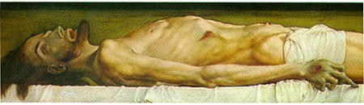

Page index / courses
Study Guide for Dostoevsky's THE IDIOT
Welcome to the Study Guide for THE IDIOT.

This page was prepared by
Surendra Thapa and Yasuhito Une
revised by Meghan Vicks
of Middlebury College.
I. Summaries
II. The Characters
Sketches of the Important Characters.
III. And More...
Historial Background of the Novel
IV. Middlebury College Russian Department.